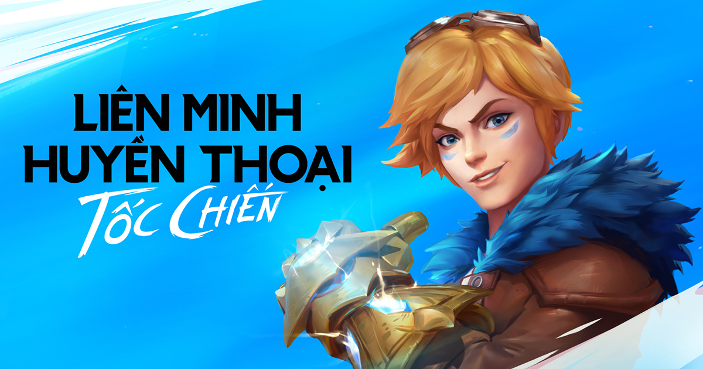

Dù mới là giai đoạn thử nghiệm giới hạn, có thể khẳng định Tốc Chiến sẽ mở ra những tiềm năng vô hạn cho thị trường MOBA trên di động.
Cuối tháng trước, Riot đã chính thức giới thiệu rộng rãi gameplay của LMHT: Tốc Chiến (gọi tắt là Tốc Chiến) đến với hàng triệu người hâm mộ trên toàn thế giới. Ngoài ra, cha đẻ của tựa game MOBA nổi tiếng này còn hé lộ về một đợt thử nghiệm giới hạn diễn ra duy nhất tại 2 quốc gia là Brazil và Philippines. Tuy đợt thử nghiệm này có quy mô khá khiêm tốn, nhưng nó lại thu hút được sự quan tâm rất lớn tới từ cộng đồng người yêu LMHT trên khắp thế giới.
Tuy Mọt Game không có hộ khẩu ở Brazil hay Phillipines, thế nhưng có lẽ do nhân phẩm của bản thân cũng thuộc vào dạng khá nên đã nhận được thư mời tham gia thử nghiệm của Riot. Dù đã xem đi xem lại không biết bao nhiêu lần đoạn video giới thiệu gameplay của Riot, thế nhưng khi được cầm trên tay và trải nghiệm LMHT: Tốc Chiến, Mọt tui vẫn không thể kìm hãm lại sự vui sướng bởi chất lượng của tựa game đã thổi bay mọi nghi hoặc vẫn quanh quẩn trong đầu Mọt từ trước tới nay.
Do đợt thử nghiệm này chỉ giới hạn tại 2 quốc gia là Brazil và Philippines, Mọt tui đã phải dùng phần mềm thứ 3 để có thể “trèo tường” sang tận Nam Mỹ và đến với Tốc Chiến. Dung lượng tổng của tựa game xấp xỉ 3.7GB, một con số không nhỏ nhưng cũng không quá lớn đối với tiêu chuẩn điện thoại ngày nay. Chung quy lại thì từ bước fake IP sang Brazil cho tới nạp dữ liệu cho game thì gần như Mọt không gặp phải khó khăn gì.

Trước khi chuyển đến giao diện chính của trò chơi, bạn sẽ có công đoạn đặt tên cho nhân vật, sau đó game cho bạn 2 lựa chọn: Một là chưa từng chơi qua LMHT, hai là đã từng có kinh nghiệm chơi tựa game trên PC rồi. Với lựa chọn thứ 2, Mọt tui được bỏ qua luôn phần hướng dẫn cơ bản và được đôn thẳng lên cấp độ 3, kèm theo đó là 3 tướng miễn phí được Riot tặng khi hoàn thành bài hướng dẫn.

Có thể nói giao diện tổng của Tốc Chiến được hoàn thiện khá tốt. Những tính năng quan trọng được sắp xếp khá ngăn nắp và khoa học, không làm người chơi rối mắt. Góc dưới màn hình là lối tắt Cửa hàng, Bộ sưu tập, Bộ trang bị, Bảng xếp hạng, Túi đồ, Nhiệm vụ, và cuối cùng là nút Tìm trận khá to rất dễ thao tác. Các chức năng khác như Cài đặt hay Thư cũng được bố trí hợp lí phía góc trên màn hình. Nhìn chung, Mọt đã có thiện cảm ngay từ khi đăng nhập vào game.

Điểm tiếp theo mà Mọt muốn đề cập tới chính là đồ họa của Tốc Chiến. Đồ họa chính là thứ hấp dẫn Mọt ngay từ lần đầu trò chơi được giới thiệu bởi theo đánh giá của cá nhân thì nó rất sát với người đàn anh trên PC. Nhưng khi được trải nghiệm trực tiếp thì mọi thứ còn vượt xa kỳ vọng của Mọt dành cho trò chơi. Bản đồ Summoner’s Rift nằm gọn trong lòng bàn tay của Mọt được thổi trọn cái hồn của người đàn anh trên PC, mọi thông tin được hiển thị rõ ràng trên màn hình điện thoại. Từng animation nhỏ của tướng được chăm chút tỉ mỉ làm toát lên toàn bộ “chất” có được từ phiên bản đi trước. Quái rừng nhảy múa sinh động, rồng nguyên tố bay lượn bệ vệ, Baron Nashor sừng sững oai hùng… tất cả được khắc họa sống động và sát hoàn toàn với những gì chúng ta vẫn biết về LMHT.

Đồ họa xuất sắc là một chuyện, ấy thế mà hiệu suất của Tốc Chiến mới thực là điều khiến Mọt tui nể phục đội ngũ phát triển của trò chơi. Ở thời điểm viết bài, Mọt đang sử dụng một chiếc điện thoại tầm trung sử dụng chip Snapdragon 710 để trải nghiệm trò chơi. Điều đáng nói ở đây là Mọt tui có thể đẩy mức đồ hoạ của game lên cao nhất mà vẫn giữ được FPS ổn định trong khoảng 60 khung hình/giây. Chỉ những pha combat về cuối game với hàng tá hiệu ứng xuất hiện thì FPS mới tụt xuống khoảng 54-55 FPS.

Một điều đáng mừng dành cho những ai đang lo lắng về cấu hình máy của mình là Tốc Chiến có hệ thống tinh chỉnh đồ họa vô cùng chi tiết, bao gồm khử răng cưa, tùy chỉnh độ phân giải, texture, hiệu ứng…Vì thế mà bạn đọc hãy yên tâm về việc liệu máy mình có chơi được Tốc Chiến hay không nhé!

Không có nhiều điều để nói về âm thanh của Tốc Chiến. Có thể tóm gọn mục này bằng một từ “tròn vai”. Các hiệu ứng âm thanh trong Tốc Chiến như lồng tiếng, kỹ năng, âm tổng hay tiếng giao diện đều được thể hiện tốt không kém gì phiên bản trên PC. Riêng có một điểm làm cá nhân Mọt tui cảm thấy khá “ngợ” đó là việc giọng của người thông báo trong game không giống với phiên bản PC. Tuy nhiên đây cũng chỉ là ý kiến cá nhân của Mọt và không có nghĩa thay đổi này cũng sẽ khiến bạn khó chịu.
Theo như thông báo của Riot, sẽ có tổng cộng 36 tướng xuất hiện trong đợt thử nghiệm lần này. Tuy nhiên, bạn sẽ được tiếp cận với khoảng 15 đến 17 tướng ở giai đoạn đầu (bao gồm tướng xoay tua miễn phí và tướng Riot phát cho bạn). Số còn lại sẽ đòi hỏi bạn phải “thăm ngàn” mới có thể mở khóa được. Giá mua tướng cũng được niêm yết 5500 tinh hoa lam mỗi con. Riot cũng khá mát tay trong khoản cày cuốc khi mà bạn sẽ nhận được tướng miễn phí khi lên cấp ở giai đoạn đầu, ngoài ra chuỗi nhiệm vụ hằng ngày cũng cung cấp một lượng kha khá tinh hoa lam cho người chơi. Để bạn đọc dễ hình dung, sau khoảng 30 phút trải nghiệm thì Mọt tui đã cày được hơn 2 ngàn 2 tinh hoa lam. Ngoài ra, Mọt tui cũng đếm được có 29 skin xuất hiện trong đợt thử nghiệm lần này.

Về gameplay của trò chơi, Tốc Chiến phải thay đổi rất nhiều so với người đàn anh trên PC để có thể phù hợp với nền tảng di động. Tốc độ của trò chơi sẽ được đẩy lên rất nhanh. Một trận đấu trung bình sẽ kéo dài từ 15 tới 20 phút, vì thế mà thời gian cooldown của kỹ năng cũng như phép bổ trợ chỉ bằng khoảng 40% tới 50% phiên bản trên máy tính. Để bạn đọc dễ hình dung, Mọt tui thường lên được món đồ thứ 2 trong khoảng 10 phút đầu của trận đấu. Tuy nhiên, một điều tuyệt vời là dù tốc độ của trò chơi bị đẩy lên rất nhanh nhưng Mọt tui vẫn cảm nhận rõ được từng giai đoạn của game, mỗi khi nhân vật thăng tiến sức mạnh hay chiếm đoạt thành công bùa lợi. Trải nghiệm của cả game đấu được đóng gói lại gọn gàng mà chỉ khi nhìn lên đồng hồ đếm số thì Mọt mới giật mình nhận ra trận đấu chỉ kéo dài chưa tới 20 phút. Điều này có nghĩa những thay đổi của Riot nhằm rút ngắn thời gian trận đấu đang phát huy hiệu quả. Đây quả là một thành tựu đáng ghi nhận của đội ngũ phát triển game.

Hệ thống chia lane vẫn được giữ nguyên. Tính năng Mirror Map – Bản đồ phản chiếu từng được Riot giới thiệu trong video cũng khá dễ làm quen khi người chơi sẽ được chỉ đường đến đúng lane của mình. Một số thay đổi về trang bị, ví dụ như nâng cấp kích hoạt từ giày, hay kỹ năng kích hoạt của Gươm Vô Danh, Kiếm Ma Youmuu,… được sửa thành nội tại, tuy mới mẻ nhưng Mọt tui cũng dễ dàng làm quen chỉ sau vài ván đấu. Điểm mà Mọt thích nhất ở Tốc Chiến có lẽ là hệ thống điều khiển thông minh. Ngoài 2 nút phụ trợ Tấn công lính và Tấn công trụ thì Tốc Chiến cho thêm bạn khả năng khoá mục tiêu nâng cao rất nhiều độ chính xác của xạ thủ trong combat hoặc khi bạn tung kỹ năng chọn mục tiêu. Bạn chỉ đơn giản giữ và kéo nút Tấn công tới mục tiêu; hoặc nhấn vào biểu tượng của đối phương xuất hiện gần thanh kỹ năng để tiến hành target-lock. Phải nói rằng kể từ thời của Vainglory thì Tốc Chiến là tựa game thứ 2 mang cho Mọt tui cảm giác hài lòng với thao tác cảm ứng.

Một điểm đáng khen nữa của Tốc Chiến đó là hệ thống Fog of War và cắm mắt được bê nguyên từ PC sang. Đây là một điểm mà ít có tựa game nào trên thị trường di động làm được. Tuy Tốc Chiến không có Mắt kiểm soát, thế nhưng dấu ấn chiến thuật tới từ hệ thống Fog of War và mắt xanh/máy quét đã là quá đủ để Tốc Chiến khác biệt hoàn toàn với phần còn lại.
Tuy mới chỉ là giai đoạn thử nghiệm nhưng những trải nghiệm mà Tốc Chiến mang lại là trên cả tuyệt vời. Có thể nói, nhà phát triển Riot đã giữ đúng lời hứa khi mang tới cho người hâm mộ một trải nghiệm Liên Minh Huyền Thoại chính thống và mượt mà nhất có thể trên nền tảng di động. Bản thân Mọt tui cũng rất háo hức mong chờ những điều mà tựa game sẽ làm được trong tương lai, nhất là hệ thống giải đấu chuyên nghiệp. Dù vẫn còn một vài điểm gợn nhỏ như số lượng tướng eo hẹp, hay kết nối mạng không được như ý (là do Mọt tui không có hộ khẩu Brazil), thế nhưng chắc chắn rằng Riot có thể dễ dàng khắc phục chúng trong những đợt thử nghiệm sắp tới.
Ưu điểm:
Nhược điểm: